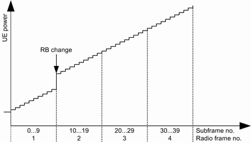
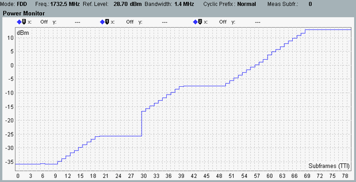

Uplink power control tests with relative commands are specified in 3GPP TS 36.521, section 6.3.5.2 "Power Control Relative power tolerance". The first two subtests require special TPC power control patterns combined with a dynamic resource block allocation. Such patterns are provided by the signaling application and are described in this section.
The basic test procedure specified by 3GPP for both subtests is as follows:
Command the UE to the initial target power, depending on the carrier frequency.
Configure the initial RB allocation, depending on the duplex mode and the cell bandwidth.
Send the TPC pattern.
Measure the resulting power steps. In parallel, change the resource block allocation.
For subtest 1, the test has to be performed three times, with the ramping up TPC patterns A, B and C. All three patterns consist of +1 dB commands over 40 active uplink subframes. Within each pattern, there is one RB allocation change. The change depends on the cell bandwidth. The position of the change within the pattern differs for pattern A, B and C.
Subtest 2 is similar, with ramping down TPC patterns instead of ramping up patterns.
The following figure shows the ramping up TPC pattern A for FDD as an example. The RB allocation change is located after the first radio frame (10 subframes).

The 3GPP specification allows us to interrupt the power ramping. The interruptions must be whole numbers of radio frames without power change (0 dB commands). The R&S CMW inserts such interruptions to reconfigure the input path according to the changing expected nominal power.
Thus the measured UE power diagram with TPC pattern A for FDD looks typically as follows.

- Frame 1: constant initial target power
- Frame 2: ramping up
- Frame 3: constant power for input path configuration
- End of frame 3: change of RB allocation
In this example, the cell bandwidth is 1.4 MHz. Thus the allocation changes from 1 RB to 6 RB (8.78 dB power step expected). - Frame 4: ramping up
- Frame 5: constant power for input path configuration
- Frame 6 and 7: ramping up
You need the LTE signaling application and the LTE measurement application (option R&S CMW-KM500/550, LTE FDD/TDD R8, TX measurement).
Set up an RMC connection with the desired duplex mode and cell bandwidth.
Note that the test procedure adapts the expected nominal power automatically. You do not need to set a specific value.
Switch to the LTE multi-evaluation measurement:
In the signaling application, press the "LTE TX Meas" softkey.
The measurement application is opened and the combined signal path scenario is selected.
In the measurement, select the TPC trigger signal provided by the signaling application:
Press the softkey "Trigger" followed by the hotkey "Trigger Source".
Select "LTE Sig<n>: TPC Trigger".
Ensure that the number of measured subframes is sufficient (e.g. 80):
Press the softkey "Multi Evaluation" followed by the hotkey "Measurement Subframes" and set "No. of Subframes".
Start the measurement. Ignore an indicated trigger timeout.
Configure and execute the TPC pattern:
Press the "Signaling Parameter" softkey followed by the "TPC" hotkey.
Set "Active TPC Setup" to "3GPP Relative Power Control".
Set "3GPP..." > "Pattern" to the desired ramping pattern (A, B or C up or down).
Press "Execute".
The TPC pattern is executed. The initial RB allocation and the RB change are configured automatically. The expected nominal power is also configured automatically. After completion of the TPC pattern, the RB allocation is reset to the allocation used before TPC pattern execution.
To check the measurement results, open the "Power Monitor" view.
To repeat the measurement with another pattern:
Select the pattern.
Press the "Execute" button again.